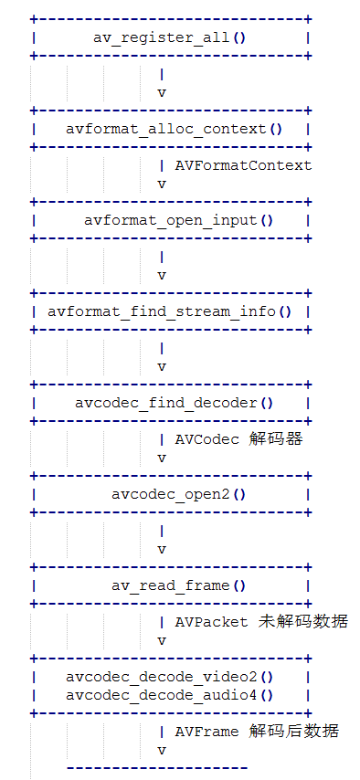

最近一直在使用和学习ffmpeg. 工作中需要拉流解码, 获取音频和视频数据. 这些都是使用ffmpeg处理.
因为对ffmpeg接触不多, 用的不深, 在使用的过程中经常遇到不太懂的地方, 就会花费很多时间去查阅资料. 所以自己对用到的知识点总结一下, 方便自己以后再重复用到时能够方便找到.
环境: ubuntu16.04, 已安装ffmpeg依赖库. gcc编译工具.
ffmpeg解码过程中用到了两个很重要的结构体, 这两个结构体比较复杂, 用到的次数也非常多, 以后我单独写一篇进行总结.

1 //***************************************************************
2 // @file: test.c
3 // @author: dingfang
4 // @date 2019-07-24 18:55:16
5 //***************************************************************
6
7 #include <stdio.h>
8
9 #ifdef __cplusplus
10 extern "C"
11 {
12 #endif
13 #include <libavcodec/avcodec.h>
14 #include <libavformat/avformat.h>
15 #ifdef __cplusplus
16 };
17 #endif
18
19 int openCodecContext(const AVFormatContext *pFormatCtx, int *pStreamIndex, enum AVMediaType type, AVCodecContext **ppCodecCtx)
20 {
21 int streamIdx = -1;
22 // 获取流下标
23 for (int i = 0; i < pFormatCtx->nb_streams; i++)
24 {
25 if (pFormatCtx->streams[i]->codec->codec_type == type)
26 {
27 streamIdx = i;
28 break;
29 }
30 }
31 if (streamIdx == -1)
32 {
33 printf("find video stream failed!\n");
34 exit(-2);
35 }
36 // 寻找解码器
37 AVCodecContext *pCodecCtx = pFormatCtx->streams[streamIdx]->codec;
38 AVCodec *pCodec = avcodec_find_decoder(pCodecCtx->codec_id);
39 if (NULL == pCodec)
40 {
41 printf("avcode find decoder failed!\n");
42 exit(-2);
43 }
44
45 //打开解码器
46 if (avcodec_open2(pCodecCtx, pCodec, NULL) < 0)
47 {
48 printf("avcode open failed!\n");
49 exit(-2);
50 }
51 *ppCodecCtx = pCodecCtx;
52 *pStreamIndex = streamIdx;
53
54 return 0;
55 }
56
57 int main(void)
58 {
59 AVFormatContext *pInFormatCtx = NULL;
60 AVCodecContext *pVideoCodecCtx = NULL;
61 AVCodecContext *pAudioCodecCtx = NULL;
62 AVPacket *pPacket = NULL;
63 AVFrame *pFrame = NULL;
64 int ret;
65 /* 支持本地文件和网络url */
66 const char streamUrl[] = "./test.flv";
67
68 /* 1. 注册 */
69 av_register_all();
70
71 pInFormatCtx = avformat_alloc_context();
72
73 /* 2. 打开流 */
74 if(avformat_open_input(&pInFormatCtx, streamUrl, NULL, NULL) != 0)
75 {
76 printf("Couldn't open input stream.\n");
77 return -1;
78 }
79
80 /* 3. 获取流的信息 */
81 if(avformat_find_stream_info(pInFormatCtx, NULL) < 0)
82 {
83 printf("Couldn't find stream information.\n");
84 return -1;
85 }
86
87 int videoStreamIdx = -1;
88 int audioStreamIdx = -1;
89 /* 4. 寻找并打开解码器 */
90 openCodecContext(pInFormatCtx, &videoStreamIdx, AVMEDIA_TYPE_VIDEO, &pVideoCodecCtx);
91 openCodecContext(pInFormatCtx, &audioStreamIdx, AVMEDIA_TYPE_AUDIO, &pAudioCodecCtx);
92
93 pPacket = av_packet_alloc();
94 pFrame = av_frame_alloc();
95
96 int cnt = 30;
97 while (cnt--)
98 {
99 /* 5. 读流数据, 未解码的数据存放于pPacket */
100 ret = av_read_frame(pInFormatCtx, pPacket);
101 if (ret < 0)
102 {
103 printf("av_read_frame error\n");
104 break;
105 }
106
107 /* 6. 解码, 解码后的数据存放于pFrame */
108 /* 视频解码 */
109 if (pPacket->stream_index == videoStreamIdx)
110 {
111 avcodec_decode_video2(pVideoCodecCtx, pFrame, &ret, pPacket);
112 if (ret == 0)
113 {
114 printf("video decodec error!\n");
115 continue;
116 }
117 printf("* * * * * * video * * * * * * * * *\n");
118 printf("___height: [%d]\n", pFrame->height);
119 printf("____width: [%d]\n", pFrame->width);
120 printf("pict_type: [%d]\n", pFrame->pict_type);
121 printf("___format: [%d]\n", pFrame->format);
122 printf("* * * * * * * * * * * * * * * * * * *\n\n");
123 }
124
125 /* 音频解码 */
126 if (pPacket->stream_index == audioStreamIdx)
127 {
128 avcodec_decode_audio4(pAudioCodecCtx, pFrame, &ret, pPacket);
129 if (ret < 0)
130 {
131 printf("audio decodec error!\n");
132 continue;
133 }
134 printf("* * * * * * audio * * * * * * * * * *\n");
135 printf("____nb_samples: [%d]\n", pFrame->nb_samples);
136 printf("__samples_rate: [%d]\n", pFrame->sample_rate);
137 printf("channel_layout: [%lu]\n", pFrame->channel_layout);
138 printf("________format: [%d]\n", pFrame->format);
139 printf("* * * * * * * * * * * * * * * * * * *\n\n");
140 }
141 av_packet_unref(pPacket);
142 }
143
144 av_frame_free(&pFrame);
145 av_packet_free(&pPacket);
146 avcodec_close(pVideoCodecCtx);
147 avcodec_close(pAudioCodecCtx);
148 avformat_close_input(&pInFormatCtx);
149
150 return 0;
151 }该代码不能直接编译, 编译需要依赖ffmpeg库. 包含ffmpeg动态库和makefile文件的压缩包地址: 点我下载
解压后, 进入目录, 使用make命令即可编译.
这里就几个比较重要的函数简单介绍一下.
av_register_all() /* 使用ffmpeg几乎都要调用这一个函数, 注册ffmpeg各种编解码器, 复用器等. */
avformat_open_input() /* 该函数用于打开本地多媒体文件或者网络流媒体url */
avformat_find_stream_info() /* 该函数用于读取一部分音视频数据并且获得一些相关的信息 */
avcodec_find_decoder() /* 由codec_id或者解码器名称来寻找对应的解码器 */
avcodec_open2() /* 初始化解码器 */
av_read_frame() /* 读流数据, 读出来的是压缩数据, 存放于AVPacket */
avcodec_decode_video2() /* 视频解码 解码后数据为原始数据, 存放于AVFrame */
avcodec_decode_audio4() /* 音频解码 解码后数据为原始数据, 存放于AVFrame */